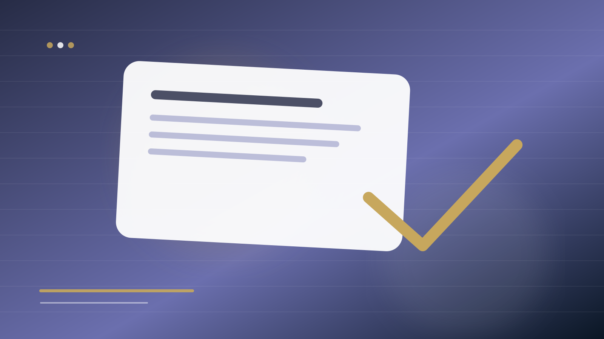

انتشار علمی · Journal Selection
چگونه مجله مناسب مقاله را انتخاب کنیم؟
مجله مناسب لزوماً مجلهای با بالاترین شاخص نیست. مقاله باید با scope، مخاطب، نوع شواهد و گفتوگوی علمی آن مجله همخوان باشد. انتخاب نادرست میتواند حتی یک مقاله خوب را به desk rejection نزدیک کند.

از scope شروع کنید، نه از نام ناشر
صفحه Aims & Scope را بخوانید و سپس چند مقاله جدید مجله را بررسی کنید. سؤال این نیست که آیا موضوع شما «بهطور کلی» در حوزه مجله است؛ سؤال این است که آیا نوع پرسش، داده و contribution شما با گفتوگویی که آن مجله اکنون منتشر میکند سازگار است.
نوع مقاله و مخاطب را تطبیق دهید
یک مطالعه تجربی کوچک، مرور نظری، مقاله روششناختی یا مطالعه زمینهای ممکن است برای مجلات متفاوتی مناسب باشند. همچنین ببینید مقاله شما برای چه کسی نوشته شده است: متخصصان یک زیرحوزه، پژوهشگران میانرشتهای یا مخاطب حرفهای.
اعتبار مجله را مستقل بررسی کنید
ظاهر حرفهای سایت کافی نیست. اطلاعات هیئت تحریریه، ناشر، فرایند داوری، هزینهها، سیاستهای اخلاقی، نمایهها و راه تماس باید شفاف باشد. ابتکار Think.Check.Submit یک چکلیست بینالمللی برای ارزیابی نشریات قابل اعتماد ارائه میکند.
هزینه و مدل دسترسی را قبل از ارسال بخوانید
هزینه پردازش مقاله، گزینههای open access، waiver و شرایط قرارداد میتوانند بر تصمیم اثر بگذارند. هیچ هزینهای نباید بعد از ارسال به شکل غافلگیرکننده ظاهر شود. اطلاعات مالی را از صفحه رسمی مجله بررسی کنید.
یک shortlist سهسطحی بسازید
به جای یک مجله، سه گزینه بسازید: گزینه ترجیحی، گزینه واقعبینانه همسطح و گزینه جایگزین مناسب. برای هرکدام scope، مقالههای مشابه، محدودیت طول، زمانبندی تقریبی اعلامشده و الزامات فرمت را ثبت کنید. این کار تصمیم بعد از رد احتمالی را سریعتر و عقلانیتر میکند.
پرسشهای رایج
آیا Impact Factor باید معیار اول انتخاب مجله باشد؟
خیر. ابتدا تناسب موضوع، نوع مقاله و مخاطب مهم است؛ سپس شاخصها و سایر معیارهای کیفیت و اعتبار را بررسی کنید.
چگونه مجله جعلی یا نامعتبر را تشخیص دهیم؟
به شفافیت ناشر، هیئت تحریریه، داوری، هزینهها، نمایهها و سیاستهای اخلاقی توجه کنید و از چکلیست Think.Check.Submit استفاده کنید.
منابع و استانداردهای مرتبط
Think.Check.Submit ابزار و چکلیست بینالمللی برای ارزیابی ناشر و مجله قابل اعتماد ارائه میکند. برای الزامات گزارشگری، بسته به حوزه و نوع مطالعه، EQUATOR Network نیز مرجع مهمی است.
جمعبندی
Journal Selection یک تصمیم استراتژیک است، نه مرحله اداری آخر. وقتی تناسب علمی، اعتبار و الزامات مجله همزمان بررسی شوند، احتمال اتلاف زمان بر اثر انتخاب نامناسب کمتر میشود.